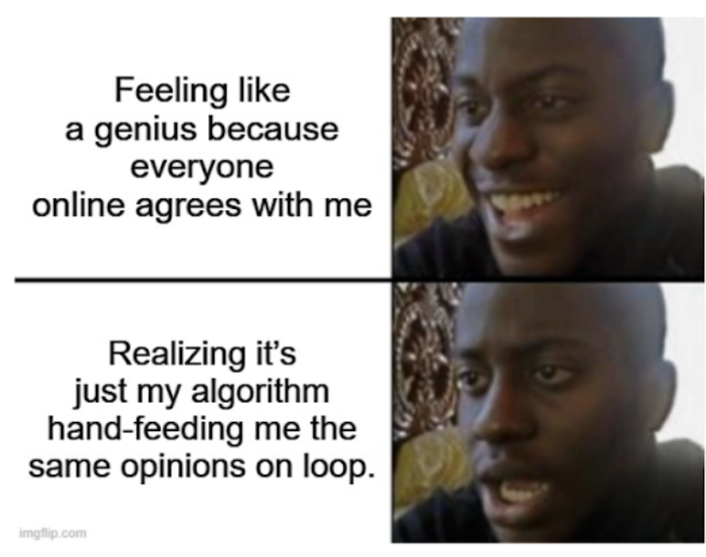
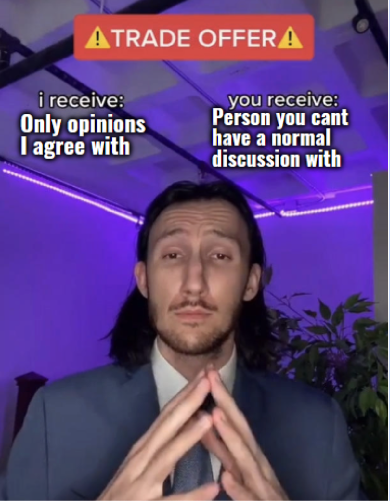
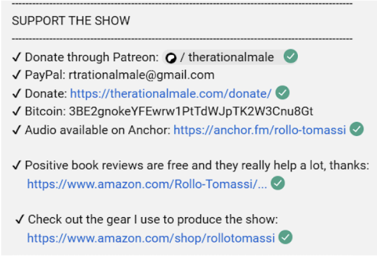

Ever scroll through your feed and feel like everyone is saying the same thing?
That’s not a coincidence!
This is because algorithms feed you more of what you already like and agree with. Over time, this creates what we call an ECHO CHAMBER. An echo chamber is a space where you mostly see ideas that confirm your existing opinions. That can make certain beliefs feel way more ‘true’ or normal than they actually are. Unfortunately, this gets even trickier because our brains already tend to seek out information that aligns with our existing beliefs: this is called confirmation bias. Most social media platforms act as echo chambers.

When you’re only hearing one side, things start to feel black-and -white. People become ‘good’ or ‘bad’ and complex problems are reduced to simple dichotomies.

This happens in lots of online communities, one example is the manosphere. Here, the huge focus on emotion and the neglect of facts, can lead to a deeply divided worldview: people start thinking in terms of us versus them, men versus women. It fuels polarization by framing men and women as opponents, it encourages emotional suppression in men and enables hostility or even physical violence against women.
Manosphere content is filled with emotional buzzwords: ALPHA!, SIMP!, WOKE!, CUCK!, FEMINAZI!
These words make you react instead of reflect.
This website is not trying to tell you what to think: it's designed to show you how you can think for yourself.
The goal of the site is to push back against the post-truth era, where alternative facts replace actual facts, and feelings have more weight than evidence.
AM I THINKING CRITICALLY?
Critical thinking is about being aware that not everything you read is true: it's a skill you can develop, not something people are born with.
When you read content online, it can be helpful to ask yourself:
Is this actually true, or is it just someone’s opinion said with confidence?
Does someone gain power, money or followers from me buying into this?
What kind of evidence would disprove this idea, and am I willing to look for it?
Can I think of examples from your own life that might contradict this idea?
Are there emotional buzzwords used, like alpha, simp, woke, cuck or feminazi? Is this language used to explain, or is it just here to trigger a reaction and get clicks?
What emotions does this trigger in me?
Does the message oversimplify something that could actually be more complex?
→ Examples: ‘All women are X or all men are Y.’
Does this message encourage empathy and understanding? Or does it spread division or blame?
Is this content trying to manipulate my opinion?
MANOSPHERE MYTHS?
If you're a young man on the internet, you've probably heard this before:
“80% of women only go after the top 20% of men.”
“Women are wired to ‘date up’. If a better man comes along, they’ll leave you.”
These ideas, which are often thrown around as HARSH TRUTHS are based on real concepts. But the ways they are used by manosphere influencers are full of distortions. Let's take a look at the origins of these ideas and where they fall short.
The Pareto Principle (The 80/20 rule)
The Pareto principle states that for many outcomes, roughly 80% of consequences come from 20% of causes. The manosphere twists this into dating logic, by stating that 80% of women are only interested in 20% of men.
This is presented as a natural law instead of what it really is: a pattern that sometimes shows up in very specific -often economic- situations. It may sound scientific, but that is not the case.
What's wrong here?
The idea mainly traces back to dating-apps data that showed that women rated 80% of men as below average in attractiveness.
But: online swiping ≠ real-life dating!
Dating-apps are designed for snap-judgments, mostly based on photos. That means that people could easily swipe left on someone they might actually like in real life.
So, if anything, this pattern applies to both genders. But that’s still a far cry from what the 80/20 rule claims.
There is no scientific research that provides evidence for this rule.
TIME FOR SOME QUESTIONS!
Let’s take a look at some questions from the critical thinking toolkit by applying it to an example. We encourage you to do this with one of your parents/guardians.
When Rollo says 100% of women are only attracted to 20% of men, do you think this is a fact, or could it just be his ‘opinion’ said with confidence? Does it maybe oversimplify reality?
Rollo says ‘there are statistics’ multiple times, but doesn’t show them. Do you think this still counts as proof?
When Rollo says only the top few percent of men should approach women and that anyone else doing so is seen as creepy, how does that make you feel?
What kind of evidence would disprove this idea, and are you willing to look for it?

Take a look at the links in the description that invite you to donate, buy his book or support his brand. Does it seem like the message is solely about informing the public with factual information, or building a business? Could it be that Rollo profits from you believing him?
Does his message encourage empathy and understanding according to you? Or do you think it spreads division or blame?
Time to look at another example. Let's think critically about: Hypergamy.
This term comes from sociology and it originally referred to women marrying up - meaning marrying someone with more money, status or education. It is true that this occurs, for example, in parts of the world (or time periods) where gender inequality is high and women have fewer rights. But in the manosphere, this is turned into a biological claim stating that women’s brains are wired to seek higher-status men. This is not backed by any scientific evidence. In fact, research on marriage patterns in England from 1837-2021 found no evidence that women consistently ‘marry up’.
Let’s take a look at some questions from the critical thinking toolkit by applying it to the video below. We encourage you to do this with one of your parents/guardians.
Is this actually true, or is it just someone’s opinion said with confidence? Does he back his claims with any scientific evidence?
Take a look at this statement: “I will say that one more time; she will not be fully satisfied unless she is in the position of doing 100% of the pursuing.” Do you think this message oversimplifies something that could actually be more complex? In other words: Do you believe this applies to all women, or could it be more nuanced than that?
Try this: Discuss this with a woman you know and trust -maybe your mom, sister, aunt or a friend- and see if this applies to them.
Does someone gain power, money or followers from me buying into this? Take a look at the links in the description that invite you to buy his online coaching packages. If he makes money from you believing his ideas about women, does that make you believe he’s showing the full picture?
Does this message encourage empathy and understanding? Or does it spread division or blame by turning relationships into a power struggle? → Would you want a relationship where you can’t show emotions, just to keep someone interested?
But what about....
Society is rigged against men, and women hold all the power now.
This idea is especially common in certain online communities like MGTOW (Men Going Their Own Way), Red Pill spaces, and incel forums. A popular claim there is that modern society favors women while men are systematically disadvantaged—emotionally, legally, and socially.
Let’s break it down with some critical thinking. Is this a fact—or a confident opinion?
When people speak with certainty, it can sound like the truth. But confidence isn’t the same as evidence. If we take a closer look, this idea doesn’t hold up. Many influencers promoting this claim also sell courses, coaching packages, or “Matrix escape” programs. That raises a question: are they really trying to inform you—or sell you something?
A common theme in these spaces is that feminism is no longer about equality, but about controlling men. They tend to blame societal movements—like feminism—for men’s struggles, instead of examining how systems and outdated gender norms might be the root of the problem.
ALGORITHM
An algorithm is like a digital recommendation system. It works by tracking what you click on, like, share, or watch for a long time, and then gives you more of that. So, lets say you click on one video about “alpha males” or “dating tips,” the algorithm concludes you want more of that and thus shows you similar content.
CONFIRMATION BIAS
Confirmation bias is the tendency to search for data that can confirm beliefs we already have, as opposed to looking for data that might challenge those beliefs. We are also more likely to reject or disbelief information we disagree with.
Have you ever scrolled past 10 Google results you don't agree with, so that you can find one you do agree with? This is confirmation bias in action!
POLARIZATION
Polarization is a state in which the opinions, beliefs, or interests of a group or society no longer range along a continuum but become concentrated at opposing extremes.
Broyd J, Boniface L, Parsons D, Murphy D, Hafferty JD. Incels, violence and mental disorder: a narrative review with recommendations for best practice in risk assessment and clinical intervention. BJPsych Advances. 2023;29(4):254-264. doi:10.1192/bja.2022.15
Post-truth refers to a situation in contemporary politics where facts have lost their significance in public discourse. It is characterized by the prioritization of personal beliefs over factual accuracy.